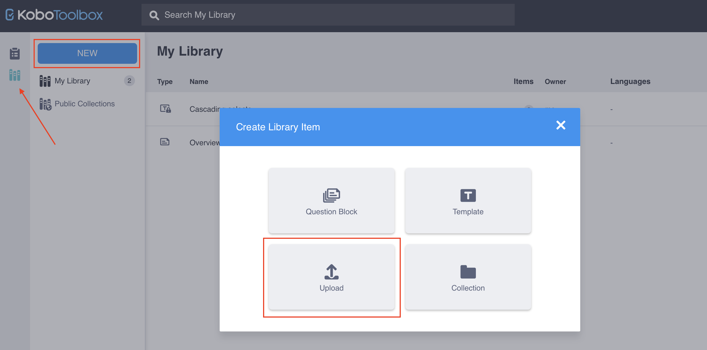
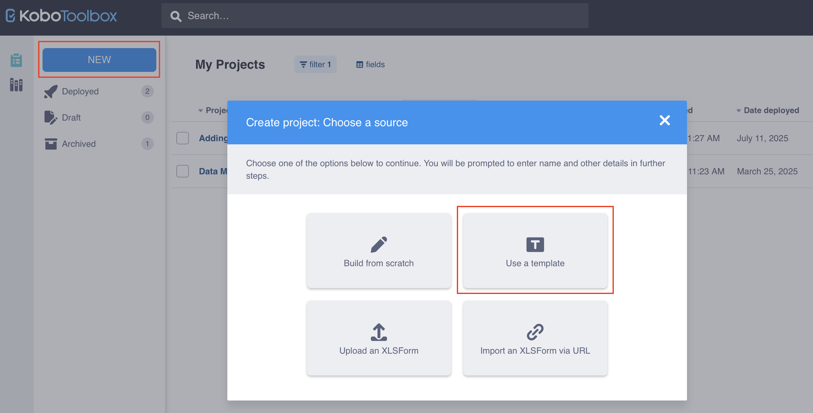
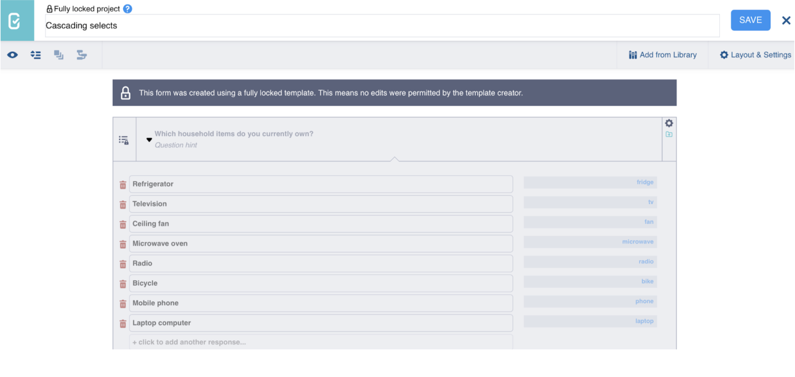

Busca en nuestra documentación, explora nuestros recursos y visita nuestro Foro de la Comunidad para obtener información más detallada
Última actualización: 21 mar 2026
La biblioteca de preguntas de KoboToolbox te permite almacenar y gestionar plantillas, preguntas y bloques para reutilizarlos en múltiples proyectos. Las plantillas de formulario en la biblioteca se pueden compartir con los miembros del equipo para garantizar un diseño de formulario coherente y reducir la duplicación de esfuerzos.
El bloqueo de biblioteca amplía esta funcionalidad al permitirte controlar cómo se pueden editar las plantillas una vez que se usan para crear nuevos proyectos. Con el bloqueo, puedes especificar qué preguntas, grupos o configuraciones a nivel de formulario se pueden modificar. Esto es especialmente útil para equipos grandes que trabajan a partir de una plantilla compartida, donde ciertos elementos deben permanecer fijos mientras que otros pueden adaptarse a las necesidades locales.
Este artículo explica cómo funciona el bloqueo de biblioteca, los tipos de restricciones que puedes aplicar, cómo configurarlos en XLSForm y cómo cargar XLSForms bloqueados en KoboToolbox.
Nota: El bloqueo de biblioteca no está disponible actualmente en el editor de formularios de KoboToolbox (Formbuilder). Para usar esta funcionalidad, debes implementarla mediante XLSForm y luego cargar tu XLSForm en KoboToolbox.
Para obtener más información sobre cómo cargar y usar plantillas en KoboToolbox, consulta Usar la biblioteca de preguntas de KoboToolbox.
El bloqueo de biblioteca controla en qué medida se puede editar un formulario cuando se crea un proyecto a partir de una plantilla de la biblioteca. Las restricciones se definen en tu XLSForm antes de cargar el formulario.
Cuando creas una plantilla bloqueada y la compartes a través de tu biblioteca:
Los usuarios pueden hacer ajustes locales donde las restricciones lo permitan.
Los elementos bloqueados aparecen en gris en el Formbuilder.
Un mensaje encima del formulario indica qué restricciones están activas.
El bloqueo de biblioteca es independiente de los permisos del proyecto, que controlan lo que los distintos usuarios pueden hacer dentro de un proyecto implementado.
Nota: Las restricciones de bloqueo de biblioteca se aplican únicamente en el Formbuilder cuando se crea un proyecto a partir de una plantilla bloqueada. Si el XLSForm se descarga y se edita en una hoja de cálculo, las restricciones no impedirán los cambios. Sin embargo, configuraciones de bloqueo incorrectas o no válidas pueden causar errores al volver a cargar el formulario.
El bloqueo de biblioteca se configura en tres hojas del XLSForm:
hoja survey: Para aplicar restricciones a preguntas y grupos específicos.
hoja settings: Para aplicar restricciones a nivel de formulario y configurar la opción kobo--lock_all.
hoja kobo–locking-profiles: Para definir perfiles que agrupan restricciones relacionadas.
En conjunto, estas hojas te permiten definir qué partes del formulario permanecen fijas y cuáles se pueden editar cuando se usa la plantilla para crear nuevos proyectos.
El bloqueo de biblioteca admite restricciones en tres niveles: pregunta, grupo y formulario. Las restricciones definen qué se puede y qué no se puede editar cuando se crea un proyecto a partir de una plantilla bloqueada.
Además, se puede usar una configuración global (kobo--lock_all) para bloquear el formulario completo.
Las restricciones a nivel de pregunta se aplican a preguntas individuales. Puedes aplicar las siguientes restricciones a las preguntas de tu XLSForm:
Restricción |
Descripción |
|---|---|
|
Impide agregar nuevas opciones a una pregunta de tipo selección. |
|
Impide eliminar opciones existentes en una pregunta de tipo selección. |
|
Impide editar el nombre de una opción (o valor XML). |
|
Impide editar la etiqueta de una opción. |
|
Impide reordenar las opciones en una pregunta de tipo selección. |
|
Impide eliminar una pregunta. |
|
Impide editar la etiqueta o sugerencia de una pregunta. |
|
Impide editar la configuración de la pregunta, incluido el nombre de la pregunta. Esto no incluye la lógica de omisión ni los criterios de validación. |
|
Impide editar las condiciones de lógica de omisión. |
|
Impide editar los criterios de validación. |
Las restricciones a nivel de grupo se aplican a los grupos de preguntas. Puedes aplicar las siguientes restricciones a los grupos de tu XLSForm:
Nombre |
Descripción |
|---|---|
|
Impide eliminar un grupo. |
|
Impide desagrupar preguntas. |
|
Impide editar la etiqueta del grupo. |
|
Impide agregar o clonar preguntas dentro de un grupo. |
|
Impide eliminar preguntas de un grupo. |
|
Impide reordenar las preguntas dentro de un grupo. |
|
Impide editar la configuración del grupo, incluido el nombre del grupo. Esto no incluye la lógica de omisión. |
|
Impide editar la lógica de omisión de un grupo. |
Las restricciones a nivel de formulario se aplican al formulario completo. Puedes aplicar las siguientes restricciones a tu XLSForm:
Nombre |
Descripción |
|---|---|
|
Impide cambios en el tema del formulario. |
|
Impide reemplazar el formulario en KoboToolbox mediante la opción Reemplazar formulario. |
|
Impide crear nuevos grupos. |
|
Impide agregar o clonar preguntas en un grupo. |
|
Impide reordenar las preguntas. |
|
Impide editar las traducciones. |
|
Impide editar las preguntas de metadatos. |
La configuración kobo--lock_all se puede agregar a la hoja settings de tu XLSForm.
Si se configura como TRUE, el formulario completo queda bloqueado y todas las restricciones granulares se vuelven redundantes.
Si se configura como FALSE (u se omite), solo se aplican las restricciones definidas en tus perfiles de bloqueo.
hoja settings
kobo–lock_all |
|---|
TRUE |
settings |
Los perfiles de bloqueo son conjuntos de restricciones que se pueden aplicar a preguntas, grupos o al formulario completo. Se definen en la hoja kobo–locking-profiles del XLSForm y luego se aplican en las hojas survey y settings. Puedes crear tantos perfiles como necesites.
Para definir perfiles de bloqueo en tu XLSForm:
Crea una nueva hoja llamada kobo--locking-profiles.
Agrega una columna restriction, que puede incluir cualquier restricción de las tablas anteriores.
Crea una columna por cada perfil (por ejemplo, profile_1, profile_2).
En la celda correspondiente a una restricción y un perfil, incluye la palabra clave locked para asignar una restricción a un perfil.
hoja kobo–locking-profiles
restriction |
profile_1 |
profile_2 |
profile_3 |
|---|---|---|---|
choice_add |
locked |
locked |
|
choice_delete |
locked |
||
choice_value_edit |
locked |
locked |
|
choice_label_edit |
locked |
||
choice_order_edit |
locked |
||
question_delete |
locked |
locked |
|
form_appearance |
locked |
Una vez que hayas definido los perfiles de bloqueo en la hoja kobo–locking-profiles, puedes aplicarlos a preguntas y grupos específicos. Para aplicar perfiles en la hoja survey:
Crea una columna llamada kobo--locking-profile en la hoja survey.
Para cada pregunta o grupo que quieras restringir, define el perfil de bloqueo en la columna kobo--locking-profile.
hoja survey
type |
name |
label |
kobo–locking-profile |
|---|---|---|---|
select_one country |
country |
Select your country |
profile_1 |
select_one city |
city |
Select your city |
profile_2 |
survey |
Además de aplicar perfiles a preguntas y grupos en la hoja survey, también puedes aplicar un perfil con restricciones a nivel de formulario en la hoja settings.
Para aplicar un perfil en la hoja settings:
Crea una columna kobo--locking-profile en la hoja settings.
Especifica el perfil que deseas aplicar.
hoja settings
kobo–locking-profile |
|---|
profile_3 |
settings |
Nota: Las restricciones no se pueden aplicar en la hoja choices. Todas las restricciones relacionadas con opciones se definen a nivel de pregunta o grupo en la hoja survey.
Una vez que hayas creado y cargado un XLSForm bloqueado como plantilla, puedes usarlo para crear nuevos proyectos en KoboToolbox.
Para importar un XLSForm bloqueado en tu biblioteca:
Ve a Biblioteca desde la barra de menú izquierda en KoboToolbox.
Haz clic en NUEVO y selecciona Cargar.
Carga tu archivo XLSForm y selecciona Cargar como plantilla.

La plantilla aparecerá en tu biblioteca con un símbolo de candado, lo que indica que contiene restricciones.
Ve a la página de Proyectos.
Haz clic en NUEVO y selecciona Usar una plantilla.
Elige la plantilla bloqueada que deseas usar.
Continúa creando tu proyecto como de costumbre.

Cuando abras el proyecto en el Formbuilder:
Aparecerá un mensaje encima de la primera pregunta con un resumen de las restricciones.
Las preguntas, grupos o configuraciones a nivel de formulario bloqueados aparecerán en gris.
Cada pregunta bloqueada muestra qué perfil se ha aplicado en Configuración > Funciones bloqueadas.

settings de tu XLSForm. Si kobo--lock_all está configurado como TRUE, el formulario completo quedará bloqueado.kobo--locking-profiles sean válidos. Solo se admiten nombres de restricciones predefinidos.kobo--locking-profile exista en la hoja survey o settings y de que los nombres de los perfiles coincidan con los definidos en la hoja kobo--locking-profiles.-- en un guión largo (—). Usa siempre dos guiones simples en nombres como kobo--locking-profiles.¿Encontraste lo que buscabas? ¿Te ha parecido clara la traducción? ¿Faltaba algo?
¡Comparte tus comentarios para ayudarnos a mejorar este artículo!
KoboToolbox es mantenido por Kobo Inc.